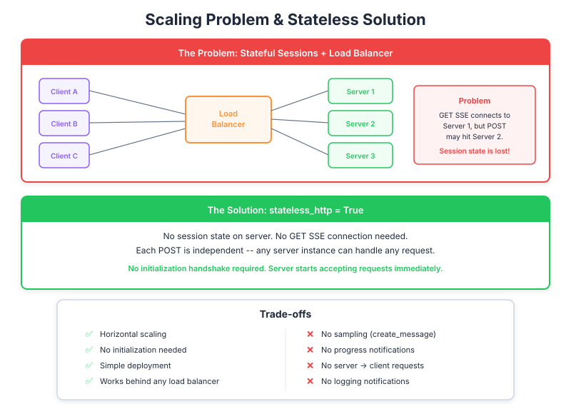

| Item | Detail |
|---|---|
| Exam Domain | D2 — Tool Design & MCP Integration (18%) |
| Task Statements | 2.1 (MCP transport selection), 2.4 (remote server configuration), 2.6 (horizontal scaling patterns) |
| Source | model-context-protocol-advanced-topics / 03-transports / Lesson 14 |
When your MCP server gets popular and needs to scale, you face a choice: keep rich features with complex infrastructure, or go stateless for simple scaling but lose key capabilities like progress tracking and AI sampling.

Imagine your MCP server is a restaurant:
This is the coordination problem of scaling MCP servers.
As your user base grows, a single MCP server instance won't handle the load. You need multiple instances behind a load balancer. But MCP's session model assumes a single server:
| What the Client Does | Which Instance Handles It |
|---|---|
| Opens SSE connection (persistent) | Instance A |
| Makes a tool call (POST) | Instance B (random!) |
| Expects progress updates | Instance A has the SSE... but B has the task |
The load balancer doesn't understand MCP sessions. It just distributes requests.
💡 Key Insight
This is not a bug — it's a fundamental tension between stateful protocols (MCP with sessions) and stateless infrastructure (HTTP load balancers). Every team building production MCP servers hits this wall.
Force the load balancer to always route the same client to the same server instance.
| Pros | Cons |
|---|---|
| Keep all MCP features | Uneven load distribution |
| No code changes needed | Single point of failure per client |
| Familiar pattern | Harder to auto-scale |
Enable stateless_http=true — each request is independent.
| Pros | Cons |
|---|---|
| Any instance handles any request | No progress tracking |
| Standard load balancing works | No server-initiated features |
| Easy auto-scaling | No sampling (server can't call AI) |
| Better fault tolerance | No initialization = no capability negotiation |
| Feature | With State | Stateless | Business Impact |
|---|---|---|---|
| Progress bars | Available | Lost | Users wait blindly during long operations |
| Sampling (AI reasoning) | Available | Lost | Server can't ask AI to help with decisions |
| Approval workflows | Available | Lost | No human-in-the-loop from server side |
| Basic tool calls | Available | Available | Core functionality preserved |
| Resource reads | Available | Available | Data access preserved |
| Auto-scaling | Complex | Simple | Infra team can use standard tools |
| Fault tolerance | Poor (session lost) | Excellent (no state to lose) | Better uptime during instance failures |
| Scenario | Recommended Approach |
|---|---|
| < 100 concurrent users | Single server, both flags false (full features) |
| 100-10K users, features matter | Sticky sessions (keep state) |
| 10K+ users, basic tool access | Stateless mode |
| Simple API integration | Stateless + JSON response |
| Prototype/MVP | Single server, all features |
json_response Flag (Bonus Simplification)On top of stateless, you can also enable json_response=true:
| Without (default) | With json_response=true |
|---|---|
| Results stream in real-time | One response at the end |
| Users see partial progress | Users wait, then get everything |
| More complex infrastructure | Standard REST API behavior |
Both flags on = the simplest possible MCP server. It's essentially a REST API with MCP message format.
stateless_http=true — five features disabled.| Front | Back |
|---|---|
| What scaling problem does MCP face? | Two connections (SSE + POST) from one client may hit different server instances behind a load balancer |
| What is the standard solution for MCP horizontal scaling? | stateless_http=true — eliminates session state so any instance handles any request |
| What do users lose when you go stateless? | Progress bars, sampling, server-initiated approval flows, resource subscriptions |
| What do users keep when you go stateless? | Basic tool calls and resource reads — all client-initiated features |
| What infrastructure benefit does stateless provide? | Standard round-robin load balancing, easy auto-scaling, better fault tolerance |
What does json_response=true add on top of stateless? |
Eliminates streaming — just final JSON response, making it behave like a standard REST API |
| When should a PM choose sticky sessions over stateless? | When the product needs progress tracking, sampling, or approval flows and user count is manageable |
| What is the simplest possible MCP server configuration? | Both stateless_http=true and json_response=true — basic HTTP request-response with MCP message format |